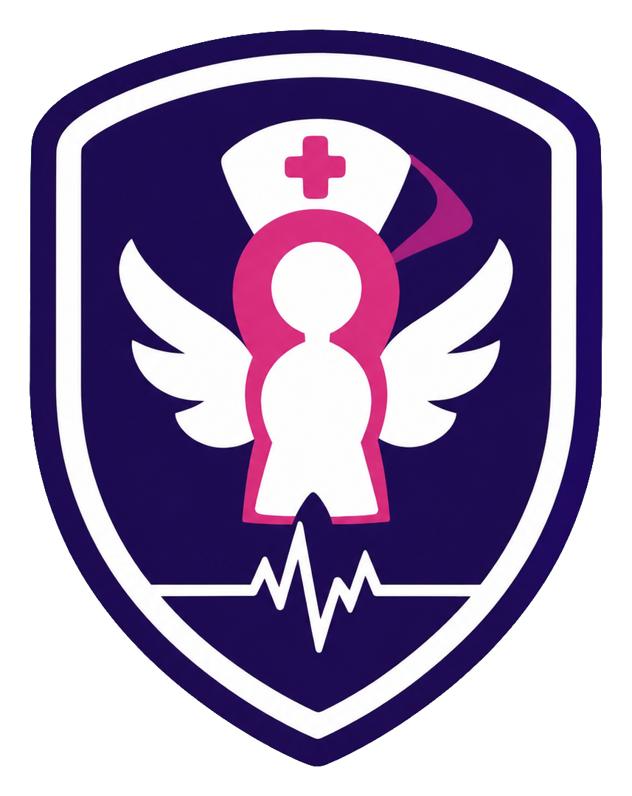

Make Room for Your Next Milestone.
📚 A new chapter in healthcare starts with making time for the skills and knowledge you want to build. Whether you're preparing for your nursing licensure exam or exploring additional healthcare training, Nightingale RN Academy offers options to support your professional development. 🩺 Explore our programs: ✅ NCLEX-RN Preparation ✅ Basic Life Support (BLS) ✅ Advanced Cardiovascular Life Support (ACLS) ✅ Pediatric Advanced Life Support (PALS) 📍 Based in Missouri City, TX, proudly serving Greater Houston. Before choosing a course, confirm any specific requirements with your school or employer. 💬 Wondering about upcoming training opportunities? Contact us to ask about course availability and find the option that fits your needs. 📞 713-281-7770 🌐 nightingalernacademy.com